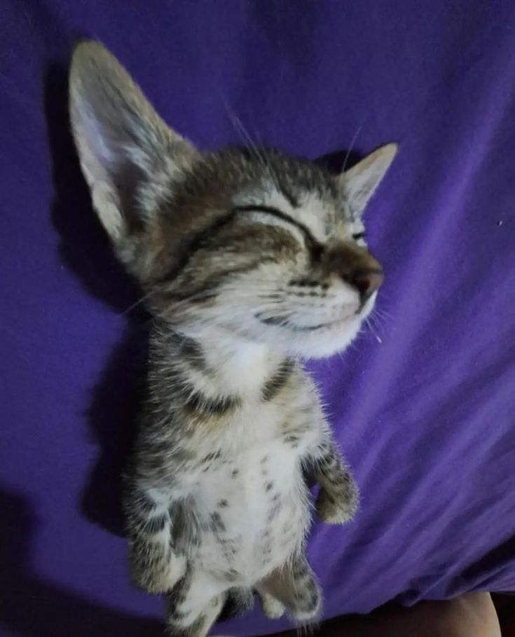

Крицкий Никита Александрович
Контактная информация

Электронная почта:
krits_nn@mail.ru

Стэк технологий:
GO(Golang), PostgreSQL, HTML, CSS, JavaScript

GitHub:
https://github.com/Fu1shon

О проекте:
Этот проект был создан для прохождения практики в колледже
Работа над ним
оказалась ценным опытом, в ходе которого я:
1.Впервые применил Golang для разработки полноценного и полномасштабного бэкенда
2.Улучшил свои навыки фронтенд-разработки
3.Получил практический опыт создания полноценного веб-приложения
В итоге хочу сказать что единственное что мне не понравилось, эта работа с документами
😭